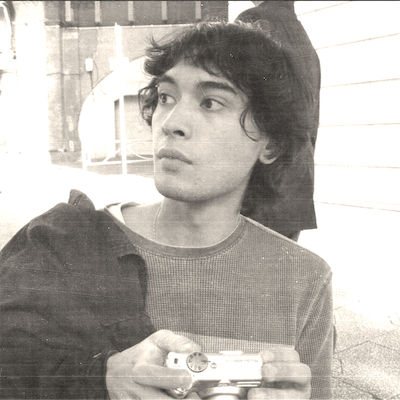

🎵 My name is Emilio, and I'm a student in the graphic design program at DAAP. I was born in 2003 in Cincinnati, and currently live in the Over the Rhine neighborhood. I am 23 years old and wasian. 🎵
I like a lot of things, such as:
I have always enjoyed exploring the internet. One of my favorite sites on the web is called rateyourmusic.com. I enjoy learning about and finding different music there. I have found some of my favorite albums, and it's a great tool if you're at all interested in music. Some of my favorite albums are:
I'm also really interested in graphic design, as it's what I'm studying. I really like both bookmaking and typography. Some of my favorite typefaces are Univers, LL Valentine, and Helvetica. Everyone likes Helvetica but it's a classic for a reason. I also think the aesthetics of web design and computer programs are pretty cool.